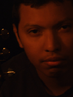

About
His voice is immediately identifiable by those that know it and intensely intriguing to those that do not. It belongs to Juan Neri, better known as the artist who writes and performs under the moniker of Arbitrary Blue. Already renowned across the Milky Way Galaxy thanks to the success of his previous two full length albums 2004 Allegories painted Blue and 2007 Slowly Turning Grey. Neri is set to propel his profile to a new plateau with the November 2012 release of his third album Silver & Gold. At the age of twelve, Neri began learning to play guitar and quickly gain a passion for the instrument, which transition his perception of music and accumulated his own style. His music quickly revolutionize the way audience perceived music and lyrics which began a new era in Rock named Arbitrary